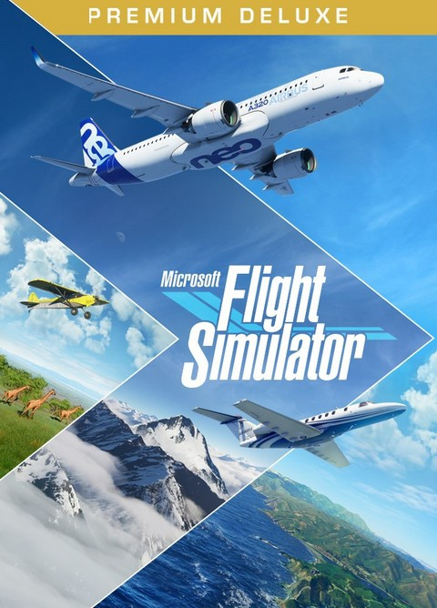

[caption id=“attachment_3589” align=“alignnone” width=“480”] Şu güzel havalı kapağı görüp de oyunu almamak olur mu?[/caption]
Microsoft’un ilk kez 1982 yılında 8 bitlik bilgisayarlar ile oyun dünyasına tanıştırdığı uçuş simülasyonu 2020 yılı sürümü ile 18 Ağustos’da karşımıza çıktı. 90 küsur GigaByte download sonrasında oynanabilir hale gelen oyun önemli teknolojik geliştirmeleri içinde barındırıyor.
Kuşkusuz bunlardan en önemlisi ve nasıl çalışacağı merakla bekleneni, oyunun haritasının gerçek dünya ile birebir olarak Microsoft Bing harita sisteminden alınmasıydı. Uçuş sırasında harita internetten online olarak indiriliyor ve Blackshark.ai sistemi ile 3 boyutlu hale getiriliyor. Böylece birebir gerçek dünya haritası üzerinde uçabilme imkanına kavuşmuş oluyoruz. Yadsınamayacak büyüklükte önemli bir teknoloji adımı oyun dünyası için.
[caption id=“attachment_3896” align=“aligncenter” width=“2560”] Batmayan güneşe doğru Finlandiya ormanları üzerinde…[/caption]
Batmayan güneşe doğru Finlandiya ormanları üzerinde…[/caption]
Oyunu oynamadan bu sistemin nasıl çalışacağı konusunda bazı şüphelerim vardı. Şehirlerden uzak doğal güzellikler içinde uçuş yapıldığında sistem oldukça iyi çalışıyor, gerçek bir dünya üzerinde uçuluyor. Bununla birlikte şehir üzeri uçuşlarında bazı sıkıntılar var. Şöyle ki Bing harita sisteminde detaylandırılmış haritalara sahip şehirler (örneğin New York) ve bölgeler Blackshark.ai ile başarılı bir biçimde 3 boyuta dönüştürülüyor ve gerçek harita üzerinde uçuş hissini yaratabiliyor. Ancak detaylı bilgisi olmayan şehirler ve bölgeler gerçekçiliği önemli ölçüde azaltan hatalı görüntülere yol açıyor. Mesela İstanbul’da Boğaz Köprüsü düz bir yol olarak gözüküyor, medeniyetten uzak ormanların içindeki kulübe yapıları büyük apartmanlar olarak 3D’ye çözümleniyor vb. Microsoft gerçeğin aynısını yapacağım derken zaman zaman olay gerçeklikten uzak bir paralel evrende geçmeye başlıyor neredeyse.
Elbette önemli şehirler ve landmarklar için eklenti paketleri ile haritaların detaylı ve gerçekçi olması sağlanacaktır (Londra şu an satılıyor örneğin) ama zaman zaman bana keyif vermeyen bir özellik oldu bu. Tüm dünya haritasında uçabilmek yerine belli bölgelerde detaylı ve gerçekçi haritalarda uçmak daha keyifli olurdu.
[caption id=“attachment_3588” align=“alignnone” width=“2560”] İztuzu’nu geride bırakıyorum.[/caption]
İztuzu’nu geride bırakıyorum.[/caption]
Anlayamadığım bir diğer konu ise görev yokluğu oldu. Bir önceki sürüm Flight Simulator X’de çok sayıda hem ilginç hem oyunun atmosferini artıran pek çok görev vardı. Büyük olasılıkla ileride çıkacak güncellemelerde eklenecektir görevler ama bu haliyle fazlasıyla bomboş bir oyun.
Simülasyon ve uçuş hissi kısmında söyleyebileceğim çok fazla şey yok, haliyle bir pilot değilim ve uçuş yardımlarını açarak oynuyorum oyunu. İnsan heyecanla kokpite dalıp uçuşa geçiyor. Ama sonrasında ne yapacağını bilemiyor. Amaçsız bir halde gökyüzünde dolaşıp haritadaki garipliklerle bir miktar eğlendikten sonra alakasız bir havaalanına iniş yaparken buluyorum kendimi.
Oyun bu haliyle henüz beta aşamasına bile geçememiş alpha aşamasında piyasaya sürülmüş gibi duruyor bence. 1-2 yıl sonra üzerinde tekrar konuşmak gerekir.